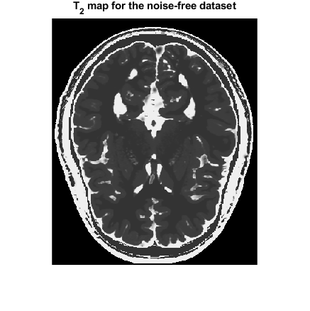
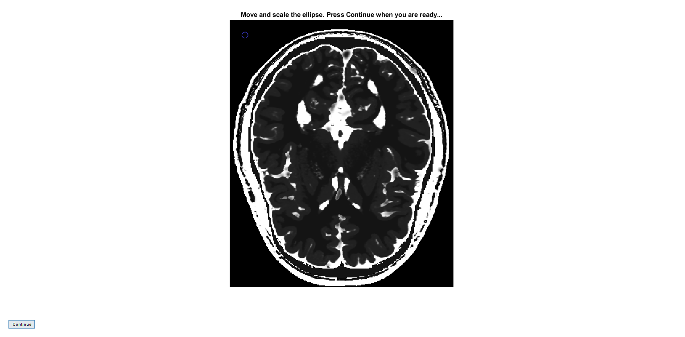
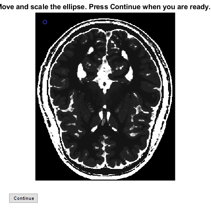
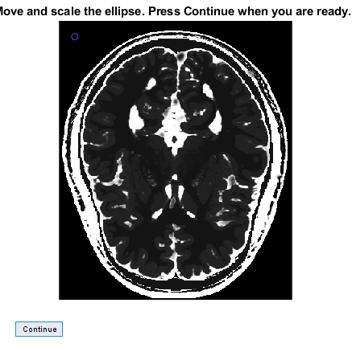
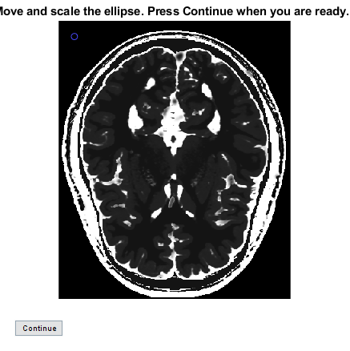

Contents
dataset = load("brainT2_mri.mat");
TE = dataset.TE;
image1 = dataset.image1;
image2 = dataset.image2;
TR = dataset.TR;
flip_degree = dataset.flip_degree;
image1_noisy = dataset.image1_noisy;
image2_noisy = dataset.image2_noisy;
b
T2map = (TE(1)-TE(2))./(log(image2)-log(image1));
figure;
imshow(abs(T2map),[0 350]);
title("T_2 map for the noise-free dataset");

c
figure;
imshow(T2map, []);
mask_wm = roiellipse;
T2_est_wm = mean(T2map(mask_wm));

d
T2map_noisy = (TE(1)-TE(2))./(log(image2_noisy)-log(image1_noisy));
T2_est_wm_noisy = mean(T2map_noisy(mask_wm));
deviation_wm = (abs(T2_est_wm - T2_est_wm_noisy)/T2_est_wm)*100;
e
figure;
imshow(T2map, []);
mask_gm = roiellipse;
T2_est_gm = mean(T2map(mask_gm));
T2_est_gm_noisy = mean(T2map_noisy(mask_gm));
deviation_gm = (abs(T2_est_gm - T2_est_gm_noisy)/T2_est_gm)*100;
 
f
figure;
imshow(T2map, []);
mask_csf = roiellipse;
T2_est_csf = mean(T2map(mask_csf));
T2_est_csf_noisy = mean(T2map_noisy(mask_csf));
deviation_csf = (abs(T2_est_csf - T2_est_csf_noisy)/T2_est_csf)*100;
